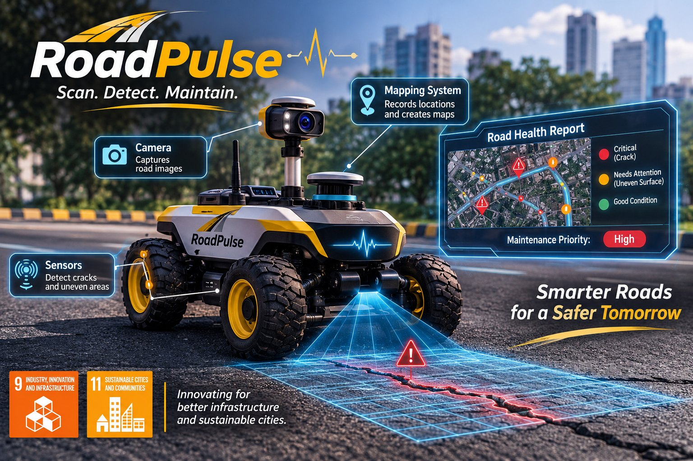

RoadPulse
Another use for our robot technology: monitoring the health of our roads.
Beyond AquaBot
Beyond AquaBot, we also envision extending the capabilities of our NRL competition robot to address other real-world challenges.
Our current robot already has mobility and object-picking capabilities. We propose modifying it with additional features, such as a camera, suitable sensors and an advanced mapping system, to develop RoadPulse, a road health monitoring application.

What RoadPulse would do
RoadPulse would use these additions to look after the road surface and keep track of how it changes over time.
- It scansUsing the added camera and sensors, it scans road surfaces.
- It identifiesIt identifies cracks and uneven areas.
- It recordsIt records the location of each problem it finds.
- It estimatesBy keeping a history of road conditions, it could help identify deteriorating sections and estimate which areas may need maintenance sooner.
From our robot to RoadPulse
We start with what our robot can already do, then add what road monitoring needs.
- Already in our robotMobility and object-picking capabilities.
- A cameraCaptures road images.
- Suitable sensorsDetect cracks and uneven areas.
- An advanced mapping systemRecords locations and creates maps.
Goals RoadPulse supports
This additional application connects to two more of the United Nations Sustainable Development Goals.
Industry, innovation and infrastructure
Encourages smarter and more resilient infrastructure through technological innovation.
Sustainable cities and communities
Promotes safer roads and more efficient urban infrastructure maintenance.
RoadPulse shows how our existing robotics technology can be adapted to address challenges beyond the competition field.